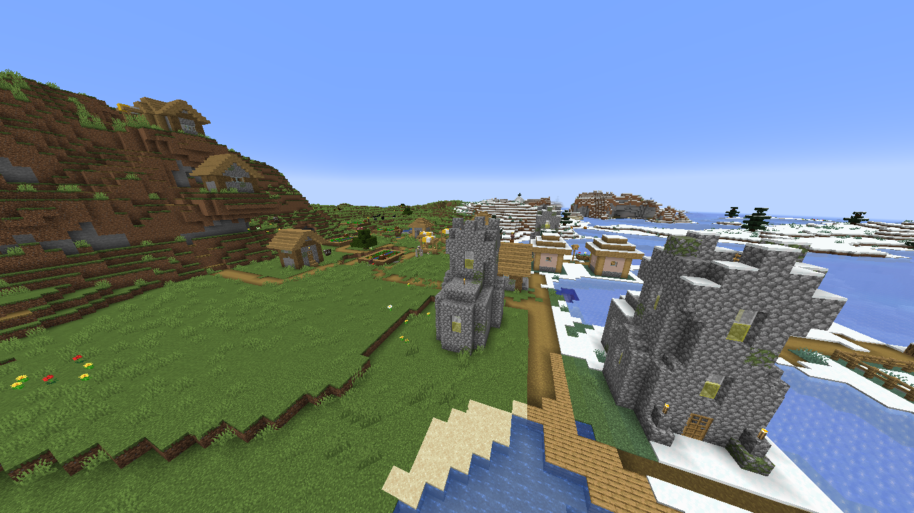
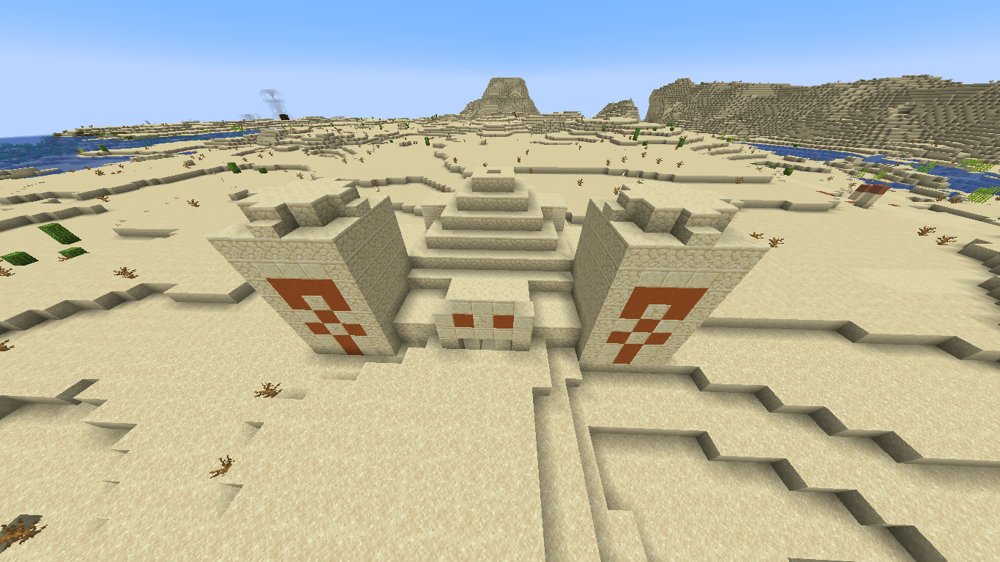
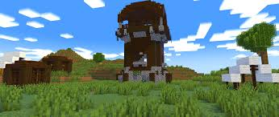
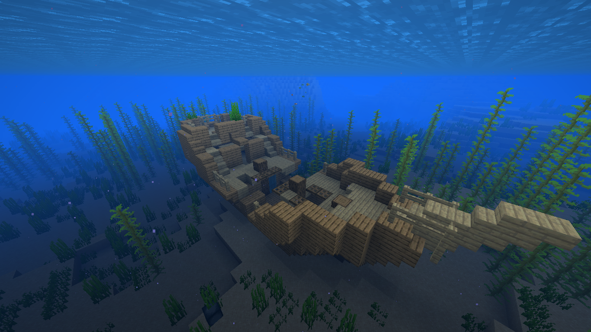

In minecraft there are a lot of structures you can find. They contain different different kinds of loot which can be very helpful or useless. Some structures are trapped and others have monsters guarding them.
Village
The village is a a town of many different kind of houses. In a village there lives vellagers and a iron golem that guards them. villages can contain lots of loot depending on what houses their are. Villergers have different jobs some are farmers and blacksmiths and some are unemplored. You can trade with villergers using emeralds. There are different kinds of villagers depending on what biome it is in.
Desert Temple
The desert temple can be found in the desert. When you walk inside a desert temple there will be block patterns in the middle of the structure. If you mine the blocks in the middle you will see a chest room far below but beware if you step on the pressure plate at the center of the chest room it will set off tnt and everything will explode. There is 4 chests and can contain very good loot like diamonds or enchanted books.
Pillager Outpost
The pillager outpost can be found in any biome a village can be found. The poutpost will be guarded by many pillagers who have crossbows. They also have a captured iron golem in a prison. If you climb to the highest floor of the outpost you can find a chest which can contain helpful items. But be carful if you kill thepillager with a banner it will leave you with a bad omen affect which means if you enter a village a raid will start with more powerful mobs.
Shipwreck
shipwrecks can be found in the ocean or on beaches. A shipwreck can have up to 3 chests each chest with different kind of loot. tresure chests can befound in the upper part of the ship supply chests in the middle and map chests in the lower part of the ship. If you do find a map it can lead you to buried tresure which will have very good loot inside. Be carful when looting a shepwreck though because you might drown if under water for to long.